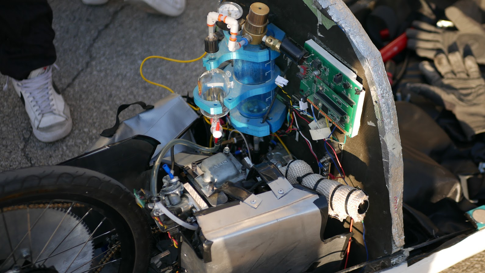
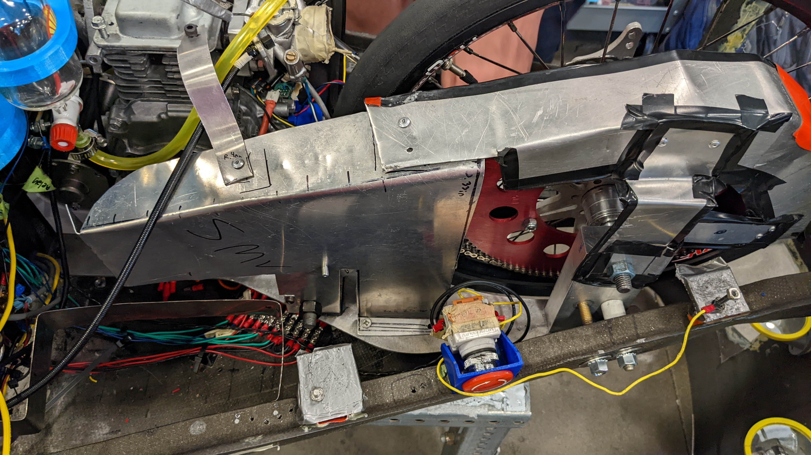

Bruin Racing SAE Supermileage

Combustion Vehicle Powertrain
While at UCLA, I joined Bruin Racing's Supermileage team. The club focused on fuel efficiency in two vehicle categories for the Shell Eco-Marathon: Combustion Prototype and Urban Concept Battery Electric. During my sophomore year, 2021-22, I helped with structures for both vehicles as well as the combustion vehicle's powertrain. In the following year, 2022-23, I served as the Lead Powertrain Engineer for the combustion vehicle. Here are some photos of the vehicle and some my work.

Sheet Metal Transmission Guard
One issue we wanted to solve was the mismatch between the throttle lever's range of motion and the actual throttle on the engine. This caused use of the throttle to feel jerky, which impacted efficiency as the driver had difficulties controlling the vehicle. My solution to this issue was a 3D-printed attachment for the lever that could adjust the ratio and offset of the lever's rotation compared to the throttle's rotation. I found that most throttle levers built-in adjustments were not flexibile enough, so this alternative solution was necessary. This attachment allowed us to functionally eliminate the throttle dead zone, so the acceleration was much smoother and the driver felt more control over the vehicle.
The tight space in the vehicle made the addition of new components a challenge, so when some new electronics were introduced, the flywheel and starter motor had to be repositioned. I 3D-printed a new mount for the starter motor and machined new standoffs for the flywheel to ensure it is well-aligned with the starter gear.

2021-22 Paint Job Render

2022-23 Paint Job Render
BACK